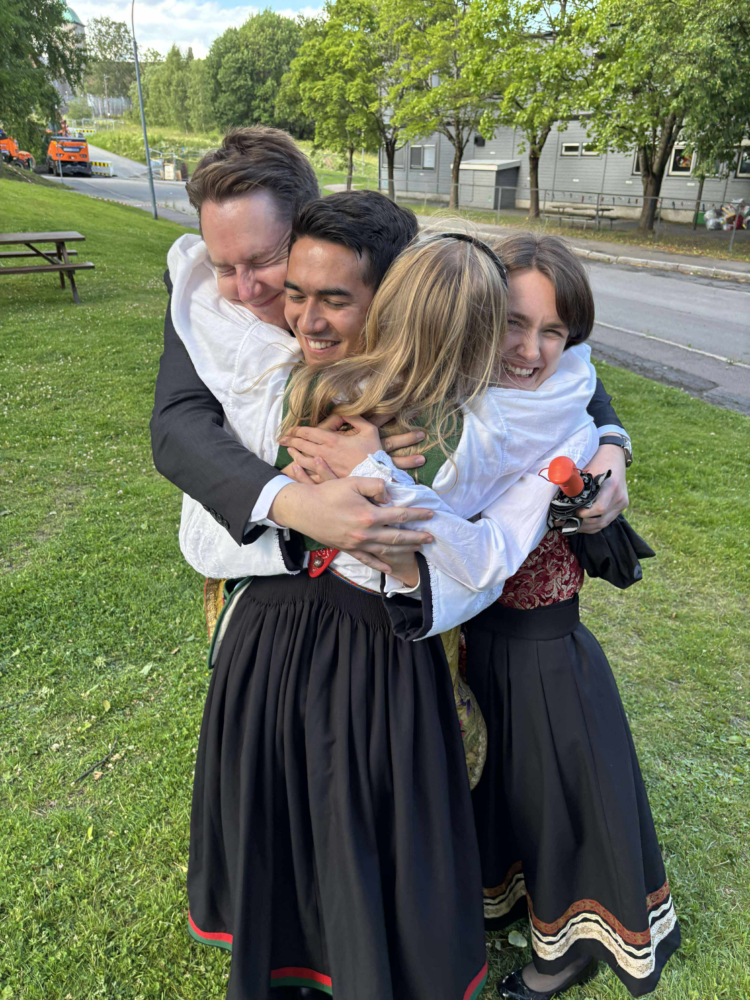
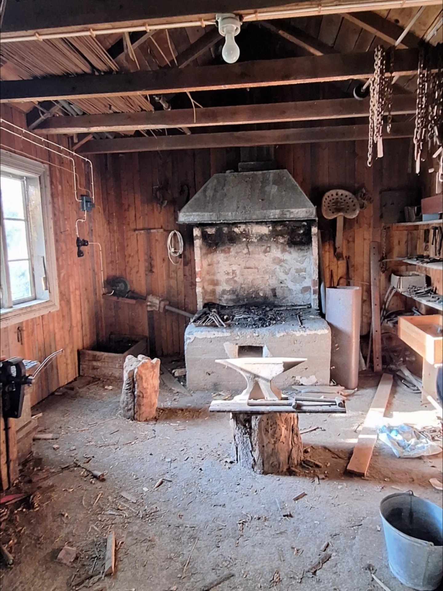
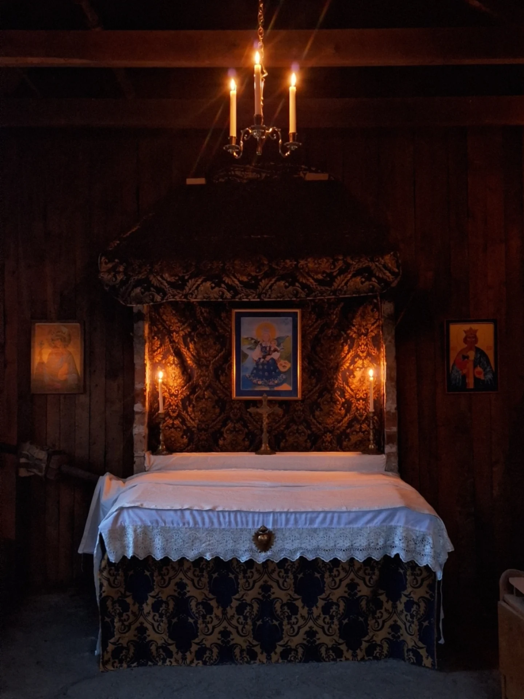

Gudbrandsdalen Valley
Where our hands meet the mountain stone.
We're four friends with a dream to build a sanctuary for our community.

August, 2023
The valley smells of pine and fresh rain today.

The Vision
A place of quiet, crafted from the very trees that surround us. No pretense, just peace.
temple_buddhist
Built by Hand
Every stone in the foundation was carried by one of us. Every beam was measured with a shared laugh. We aren't contractors; we are neighbors weaving ourselves into the land.
Mathias, Marie, Ayla og Andreas

The Progress
Currently working on the roof shingles. Cedar scent fills the entire meadow.
Join our fundraiser
We are gathering funds to build out the chapel, we would love your support!
nature_people